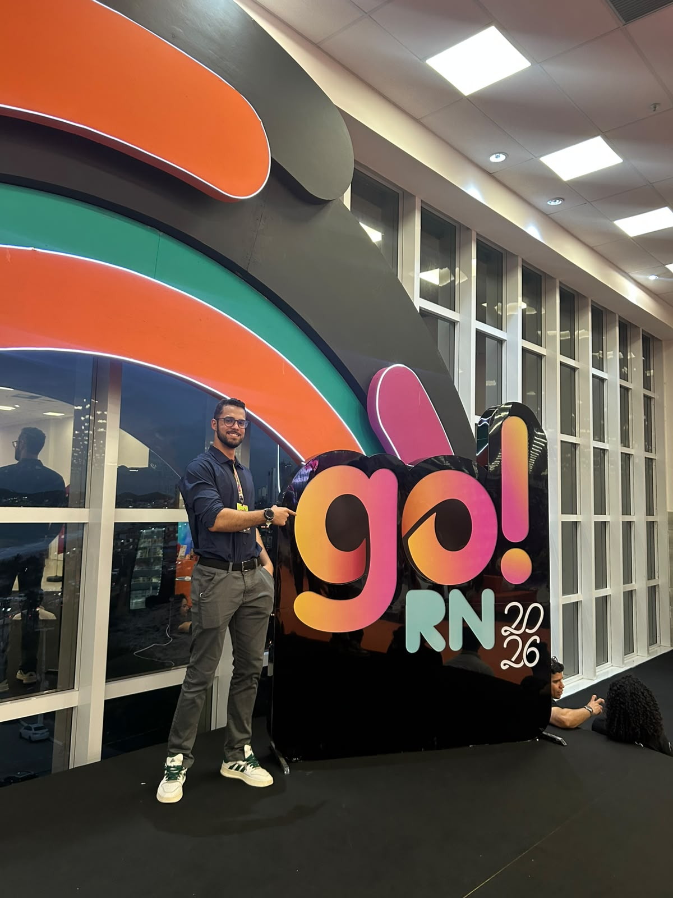

Edital Nº 01/2026 • Eleições Ordinárias IEEE UFRN
Candidatura à Secretaria
Gestão 2027
Análise Crítica e Plano de Gestão para o Capítulo Estudantil IEEE Computer Society UFRN.
Candidato
Gabriel Soares Ferreira de França
Membresia IEEE nº 102956910

01 • Sobre Mim
Gabriel Soares Ferreira de França
Membresia IEEE nº 102956910
Formação Acadêmica: Graduando em Tecnologia da Informação (BTI) pelo IMD/UFRN.
Trajetória no Capítulo: Membro voluntário da IEEE Computer Society (CS) UFRN desde 2025.2.
Área de Interesse: Foco e atuação voltados para Engenharia de Software.
Experiência Atual: Estagiário em Engenharia de Software no Hospital Universitário Onofre Lopes (HUOL).
02 • Análise Crítica
Diagnóstico da Gestão 2026
Pontos Fortes
Base Sólida- Alta capacidade operacional: mobilização coletiva comprovada em eventos de grande porte.
- TechX Natal: principal marco do ciclo, gerando forte visibilidade perante a comunidade acadêmica.
- Grande base de inscritos: elevado interesse estudantil para ingressar no Capítulo.
Gargalos Identificados
Oportunidades- Foco em eventos pontuais (ex.: CSDay): falhas de planejamento geraram custos desnecessários e desgaste da equipe.
- Falta de continuidade técnica: ausência de grupos de estudo, minicursos práticos e projetos permanentes.
- Ociosidade e baixa retenção: operação concentrada em poucos membros por falta de fluxo estruturado.
03 • Plano de Gestão
Visão & Estratégia 2027
“Rigor documental aliado à automação de processos e gestão ativa de talentos para sustentar o crescimento contínuo do Capítulo.”
04 • Eficiência Administrativa
Processos e Automação
01
Governança & IEEE vTools
- Padronização de atas: registro ágil e objetivo de pautas, decisões, prazos e responsáveis.
- Repositório no Google Drive: arquitetura limpa de pastas e histórico documental acessível à Diretoria.
- Registro contínuo no IEEE vTools: reporte regular de reuniões e atividades técnicas no sistema oficial.
02
Automação de Rotinas
- Emissão automática de certificados: geração e disparo em lote integrados às listas de frequência.
- Triagem de formulários: organização e roteamento automático de inscrições e demandas internas.
- Controle de presença ágil: check-in digital para reduzir drasticamente o esforço manual da Secretaria.
05 • Retenção de Talentos
Pessoas e Engajamento Contínuo
03
Onboarding Mapeado
- Cadastro desde o Processo Seletivo: estruturação dos dados dos voluntários logo no ingresso.
- Mapeamento de perfil: registro de habilidades técnicas, áreas de interesse e disponibilidade semanal.
- Painéis para a Diretoria: visão consolidada para alocação assertiva em frentes de trabalho.
04
Combate à Ociosidade
- Quadros visuais (Trello / Notion): manutenção ativa das tarefas e entregas em andamento no Capítulo.
- Monitoramento de disponibilidade: identificação proativa de voluntários sem demanda atribuída.
- Suporte a ações contínuas: direcionamento direto para minicursos, workshops e projetos técnicos.
Síntese • Secretaria 2027
Menos burocracia manual, mais continuidade técnica e engajamento real.
Uma Secretaria estruturada para dar previsibilidade operacional à Diretoria e protagonismo aos voluntários do IEEE Computer Society UFRN.
01
Atas, Drive & vTools
02
Automação de Rotinas
03
Onboarding Mapeado
04
Ociosidade Zero
Aberto para Sabatina
Gabriel Soares Ferreira de França
Candidato a Secretário — IEEE CS UFRN 2027 • Membresia nº 102956910